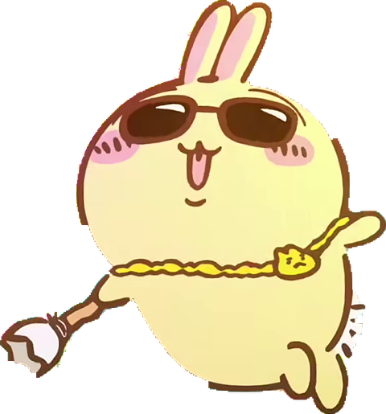

타자를 치면
입력마다 선택한 길이만큼 재생 시간이 쌓입니다. 빠르게 쳐도 소리가 건너뛰지 않아요.
USAGI RAP · BROWSER DEMO
한 번 누르면 0.3초.
세 번 누르면 0.9초.
잠깐 쉬어도, 랩은 그 자리에서 기다립니다.
브라우저에서 체험 가능 · 소스·실행 안내는 GitHub

TRY IT HERE
이 페이지의 입력창에서만 반응해요.
입력 1번 = 원음 0.3초
CHALLENGE FAILED
CHALLENGE CLEAR
전체 가사 221자를 오타 없이 이어갔어요.
시작 버튼을 누르면 소리가 준비됩니다.
재생 0.0초남은 분량 0.0초
제시된 전체 가사를 그대로 입력하세요. 줄바꿈과 기호도 함께 입력해 주세요. 오타가 나거나 랩이 멈추면 도전이 끝납니다. 붙여넣기는 사용할 수 없어요. 시작 전에 입력당 랩 길이를 조절할 수 있습니다.
입력한 글은 저장하거나 전송하지 않습니다. 모바일에서도 ‘소리 켜고 체험 시작’을 누른 뒤 입력창에 타자를 쳐보세요. 한글 조합 중에도 반응합니다. 키보드가 열리지 않으면 입력창을 다시 누르세요.
입력마다 선택한 길이만큼 재생 시간이 쌓입니다. 빠르게 쳐도 소리가 건너뛰지 않아요.
쌓인 분량만큼 재생한 뒤 멈춥니다. 우사기도 정지 자세로 돌아옵니다.
멈춘 위치부터 이어집니다. 음원이 끝나면 처음으로 돌아가요.
SOURCE & GUIDE
설치 없이 웹에서 체험하거나, 소스를 확인하고 직접 실행해 보세요.
사이트에서는 Windows 실행 파일을 직접 다운로드할 수 없습니다.